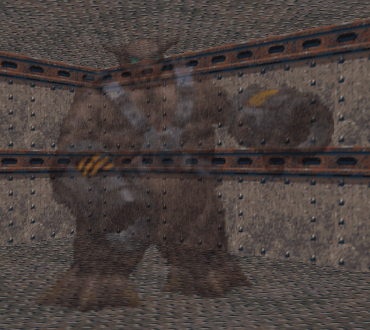

Ghost Things
Ghost things were discovered in Doom 64 by scwiba and first used in the UnMaking. This technique allows things to be impervious to damage, “un-pick-up-able”, and their transparency to be defined. Things that can collide with other things will still collide and spawn block other things as ghosts. The way to create a ghost thing is to spawn a thing with the “Thing Spawn” action and then, before it has a chance to fully fade in, interrupt it with the “Thing Fade Out”/”Thing Dissolve” action. This can be done in a macro or a monster tunnel, however a macro offers better control with transparency. A delay of engine tic of 1 will spawn nearly fully transparent ghost things, while at an engine tic of 30 the ghost things will be nearly fully opaque. At longer engine tics, the things will spawn in as normal then fade out.
Ghost things can never fully be spawned in, so they can never be killed nor picked up. However ghost things can be faded out / dissolved with a second “Thing Fade Out”/”Thing Dissolve” action. Thus one side effect of using ghost things is that they will affect the kill counter (with monsters) and the item counter (with items), preventing the player from achieving 100% statistics.
This is an example of a macro that will spawn ghost things:
macro 1
{
Thing_Spawn(1);
Delay(15);
Thing_Dissolve(1);
}
Here any thing tagged with 1 and “Spawned by Special” flag will “half-way” spawn in and become a ghost enemy (click here for an example WAD).
Ghost Blending
For things that do not have collisions, like fire, HeadshotTAS discovered that multiple ghost things can be spawned on top of each other. This allows some ghost things to be blended by controlling the alpha transparency of the different "thing layers". In the original game, fire comes in red, blue, yellow, and green (if the port supports the nightmare flag), which enables nearly all hues of torch colors by adjusting when their spawns get interupted. These blending states can be changed by despawning and spawning one of the thing layers, allowing for dynamic color changes too.